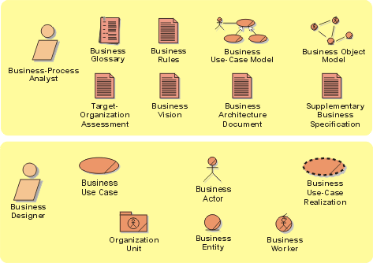

Business Modeling Artifact Set
The Business Modeling set presents the artifacts which capture and present
the business context of the system. The business modeling artifacts serve as
input to and reference for the requirements of the system.

Copyright
© 1987 - 2001 Rational Software Corporation
|  Artifacts >
Artifacts >
 Business Modeling Artifact Set
Business Modeling Artifact Set